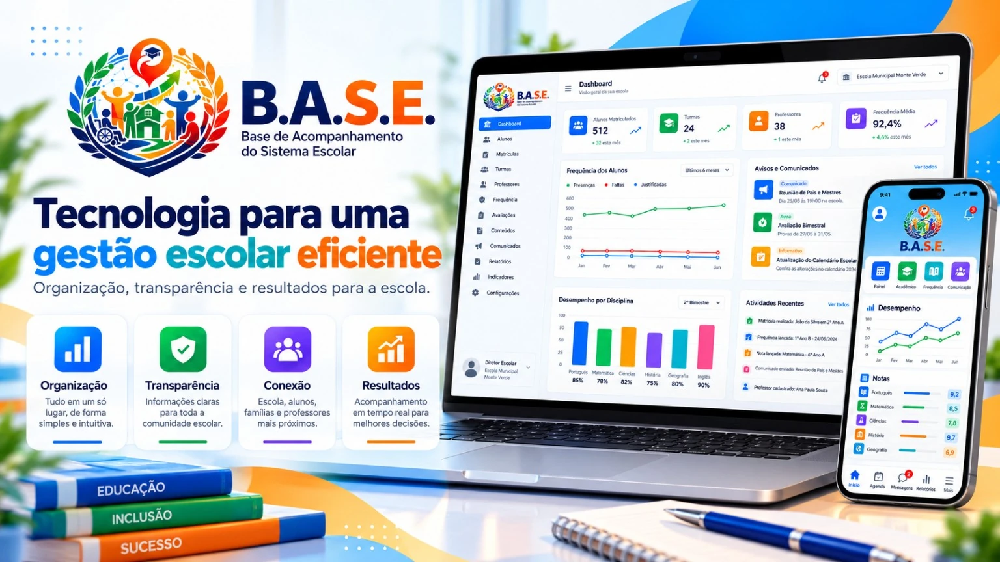
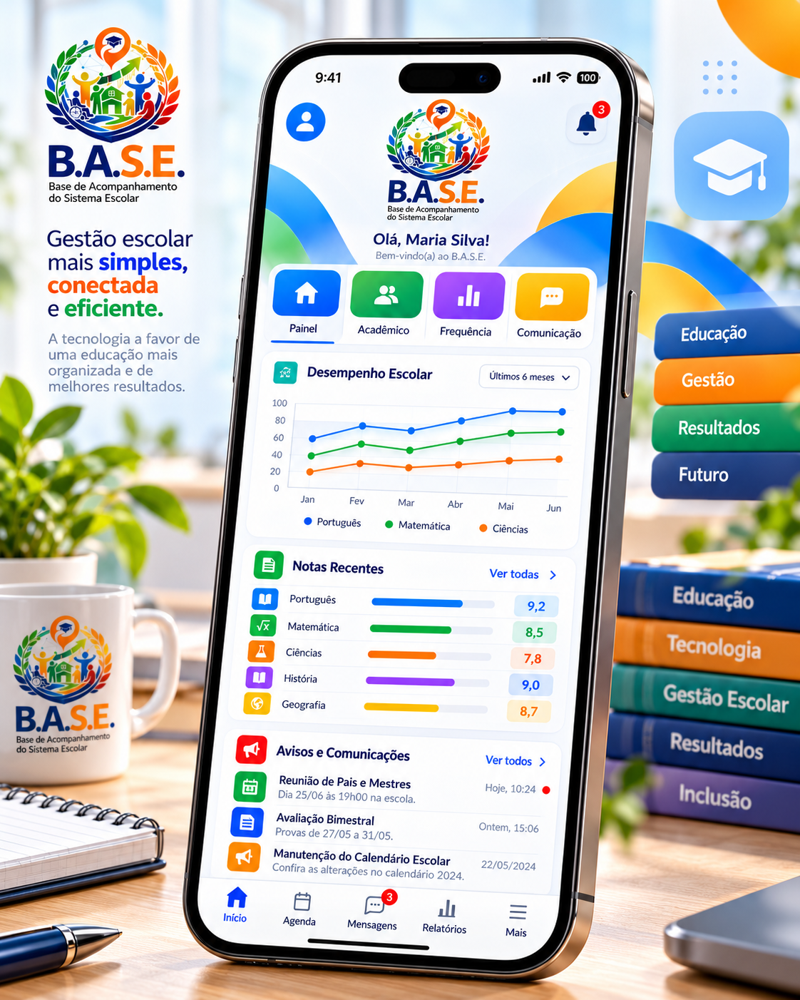

Informação centralizada
Dados acadêmicos e registros importantes reunidos em um único ambiente.
O B.A.S.E. reúne acompanhamento acadêmico, comunicação, agenda, ocorrências e informações do aluno em um único ecossistema digital para escolas, profissionais, estudantes e responsáveis.

O B.A.S.E. conecta famílias, alunos, professores e equipes escolares para tornar o acompanhamento da vida escolar mais simples, organizado e transparente.
Dados acadêmicos e registros importantes reunidos em um único ambiente.
Cada usuário visualiza as informações adequadas à sua função e vínculo.
Frequência, desempenho, agenda e ocorrências com histórico organizado.
Comunicados e informações escolares em um canal claro para cada público.
Módulos pensados para reduzir informação dispersa e facilitar a rotina de quem ensina, acompanha e administra.
Presenças, faltas, notas e evolução acadêmica de forma clara e organizada.
Provas, eventos, reuniões e outros compromissos em um calendário centralizado.
Notificações e comunicados oficiais com informação organizada para cada público.
Registros disciplinares e pedagógicos com histórico e acesso controlado.
Dados essenciais centralizados para apoiar o acompanhamento e a tomada de decisão.
Experiências e permissões próprias para alunos, responsáveis, professores e equipes escolares.
Dois ambientes conectados pela mesma base de informações.
Alunos, turmas, professores, frequência, avaliações, comunicados, relatórios e indicadores em uma interface única.

Alunos e responsáveis acompanham frequência, notas, avisos, agenda e informações acadêmicas de forma simples.

Organização de dados, indicadores, registros e acompanhamento da rotina escolar.
Turmas, frequência, avaliações, ocorrências e informações dos alunos conforme a função.
Acesso rápido à rotina acadêmica, compromissos, resultados e comunicação escolar.
Acompanhamento específico com permissões próprias, histórico e acesso controlado.
O B.A.S.E. foi pensado para diferentes escolas e perfis, mantendo cada informação no contexto adequado ao usuário.
Explore o painel diretamente no navegador ou execute a versão local no VS Code. Ambos incluem dashboard, cadastros, frequência, comunicados e login por matrícula e senha.
A demonstração online guarda os registros somente neste navegador. Não utilize dados pessoais reais. O banco TXT funciona apenas na versão local com Python.Deixe seus dados e uma mensagem. Nesta versão acadêmica, o formulário registra os contatos no armazenamento local do navegador para demonstrar o funcionamento.